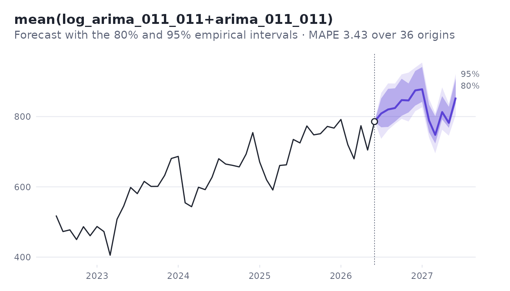
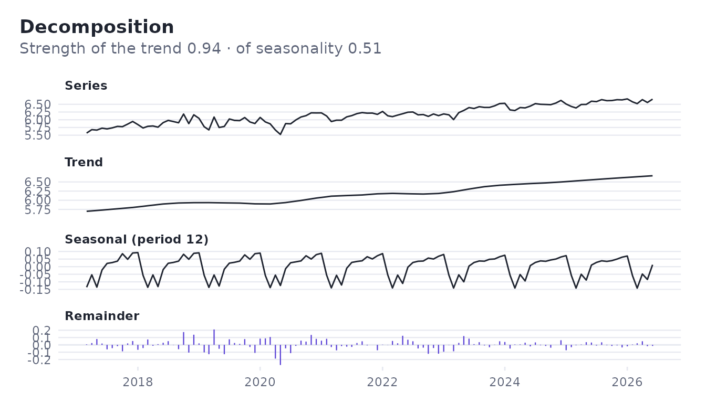

A model that fits the past well can still forecast badly.
foresightr chooses models the other way round: it replays
the past, and at each point forecasts with what was known then.
The data
Monthly ICMS, the main tax revenue of the Brazilian state of Piauí, from the public fiscal reports (Siconfi/STN). The first observation is March 2017.
path <- system.file("extdata", "piaui_revenue.csv", package = "foresightr")
data <- read.csv(path, comment.char = "#")
# BRL million, monthly from March 2017
icms <- ts(data$icms / 1e6, start = c(2017, 3), frequency = 12)Choose a model by what would have worked
backtest() refits every candidate at each of the last 36
months, using only the data before it, and forecasts up to 12 months
ahead. The candidates are ranked by their mean absolute percentage
error, the average of the best two is added as one more candidate, and
the best of all forecasts from the whole series.
bt <- backtest(icms)
bt
#> <foresight backtest> 12 candidates, 36 origins, 12 periods ahead
#> Chosen: mean(log_arima_011_011+arima_011_011) (MAPE 3.427)
#>
#> name score
#> 1 mean(log_arima_011_011+arima_011_011) 3.427
#> 2 log_arima_011_011 3.654
#> 3 arima_011_011 3.868
#> 4 log_prophet 4.749
#> 5 prophet 5.508
#> 6 log_linear 5.538
#> 7 holt_winters 7.293
#> 8 theta 7.502
#> 9 drift 7.857
#> 10 naive 8.548
#> ... and 2 moreThe forecast of the chosen candidate, with intervals that are quantiles of the errors it made in the backtest, horizon by horizon:
head(bt$forecast)
#> horizon time mean lower_80 upper_80 lower_95 upper_95
#> 1 1 2026.500 808.7847 769.5044 851.5913 736.8256 866.9912
#> 2 2 2026.583 820.3222 770.5018 878.9813 761.8516 894.4362
#> 3 3 2026.667 824.3435 785.6634 880.5138 779.0537 894.0897
#> 4 4 2026.750 846.9183 802.2410 907.6957 793.4335 920.1498
#> 5 5 2026.833 845.9071 811.9032 894.3556 785.9314 925.1126
#> 6 6 2026.917 874.5325 831.2537 929.7832 815.2608 939.4974
plot(bt)
The error of each candidate by horizon:
head(bt$candidates[[bt$best]]$accuracy)
#> horizon n mape bias mae rmse mase
#> 1 1 36 3.533275 -0.1807961 23.80781 28.58104 0.3668870
#> 2 2 35 3.607359 -0.3744145 24.22882 30.64350 0.3742738
#> 3 3 34 3.541903 -0.4923517 24.05555 29.64415 0.3716752
#> 4 4 33 3.305940 -0.6916501 23.09730 29.89687 0.3577268
#> 5 5 32 3.423529 -1.0062653 23.77651 29.91922 0.3682181
#> 6 6 31 3.633728 -1.0319047 25.08311 30.95968 0.3898493Totals
The total of the next six months has its own interval, measured on totals in the backtest. Adding up the monthly limits would give a wider and wrong interval, because the errors of successive months partly cancel.
total_forecast(bt, 6)
#> periods mean lower_80 upper_80 lower_95 upper_95
#> 1 6 5020.808 4879.802 5248.267 4866.549 5339.277One model on its own
fit <- fit_model(model_auto_arima(), log(icms))
fit$details$order
#> [1] 0 1 1
fit$details$seasonal_order
#> [1] 0 0 2
exp(predict(fit, 6))
#> Jul Aug Sep Oct Nov Dec
#> 2026 774.9555 782.2726 777.0182 777.1299 784.6480 788.9186Your own candidates
Any list of models works, renamed as you like; ensembles learn their weights again at every origin of the backtest.
mine <- list(
with_name(model_seasonal_naive(), "same_month"),
model_log(model_airline()),
model_ensemble(candidates_default(), weighting = "stacked")
)
backtest(icms, mine, origins = 24, horizon = 6)$ranking[, c("name", "score")]
#> name score
#> 1 same_month 9.927648
#> 2 log_arima_011_011 4.288811
#> 3 ensemble_stacked 3.881882
#> 4 mean(ensemble_stacked+log_arima_011_011) 3.644656Decomposition
d <- decompose_stl(log(icms), seasonal_window = 13)
d
#> <foresight decomposition> 112 observations, period 12
#> Strength of the trend: 0.939
#> Strength of seasonality (12): 0.515
plot(d)